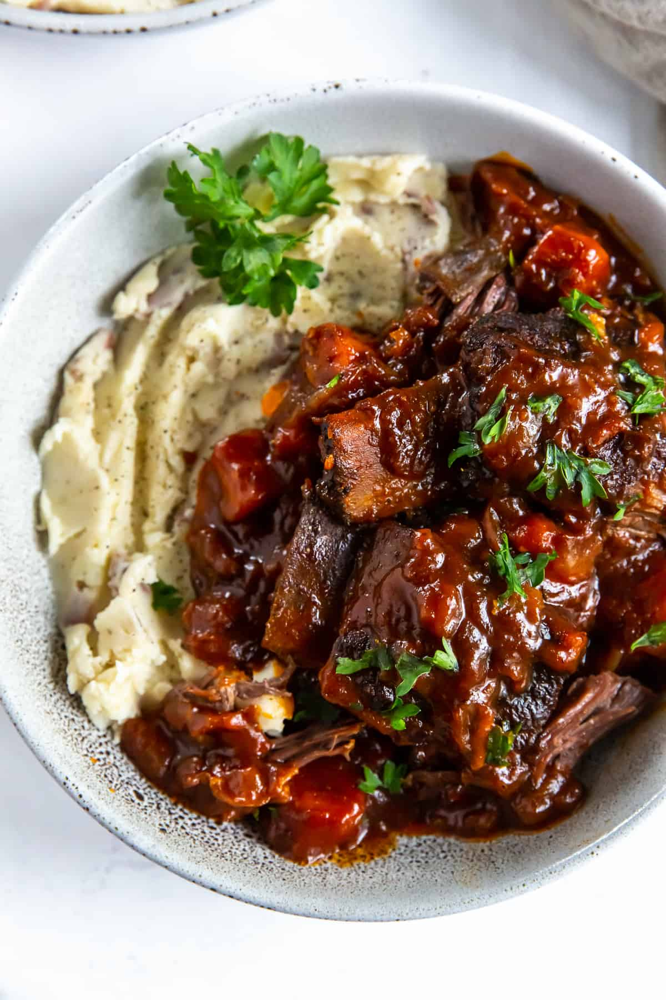

This dish features tender braised beef served with creamy pillowy mashed potatoes,
perfect for a hearty and comforting meal.

Preheat oven to 350 degrees F.
In a large dutch oven or oven safe pot with a lid,
heat one tablespoon of oil over medium high heat.
Add onion and carrots and cook for a few minutes, stirring constantly.
Remove veggies to a plate.
Season the ribs with salt and pepper and coat on all sides with flour.
Add 2 more tablespoons of oil to the pot and turn heat to high.
Add ribs and brown on all sides, about 45 seconds per side. Remove to a plate.
Add wine to the pot and deglaze, scraping up any browned bits from the bottom.
Add broth, tomato paste, thyme, and rosemary. Return the ribs and veggies to the pot.
Bring to a simmer, cover, and transfer to the preheated oven. Braise for 2-3 hours,
until the beef is tender.
Add the wine to deglaze the pan.
Scrape the bottom of the pan to release any browned bites of flavor.
Bring to a boil and cook 2 minutes.
Add beef broth, salt and freshly ground black pepper.
Stir in tomato paste. Taste broth and
add additional seasonings, if needed.
Add ribs, veggies, and (whole) sprigs of thyme and rosemary to the pot.
Cover with the lid and place into the oven. Cook at 350 degrees for 2 hours,
then reduce heat to 325 degrees and cook for an additional 30 to 45 minutes.
Ribs should be very tender, nearly falling off the bone.
Cover with the lid and place into the oven. Cook at 350 degrees for 2 hours,
then reduce heat to 325 degrees and cook for an additional 30 to 45 minutes.
Ribs should be very tender, nearly falling off the bone.
Serve ribs over mashed potatoes with a spoonful of gravy from the pot.
Serving: 4people, Calories: 347kcal, Carbohydrates: 16g, Protein: 15g, Fat: 20g,
Saturated Fat: 6g, Polyunsaturated Fat: 2g, Monounsaturated Fat: 13g, Trans Fat: 1g,
Cholesterol: 43mg, Sodium: 401mg, Potassium: 681mg, Fiber: 2g, Sugar: 4g,
Vitamin A: 7791IU, Vitamin C: 7mg, Calcium: 34mg, Iron: 2mg
Cook Potatoes: Cut potatoes in half and place in a large pot with about 4 inches of water
(they don't need to be completely covered). Cover pot with a lid, and cook, covered,
until fork tender, about 15-20 minutes. You don't want them "mushy" or falling apart.
Season: Remove lid and add butter, chicken bouillon, evaporated milk, sour cream and salt and pepper.
Mash with a potato masher. Taste and add more salt and pepper, if needed, or more milk, until they are creamy,
fluffy and smooth. I use an electric mixer to beat them on medium speed for a few seconds,
just until light and fluffy. But, be careful not to over-mix them or they will get starchy and gummy!
Calories: 231kcal, Carbohydrates: 35g, Protein: 6g, Fat: 8g, Saturated Fat: 5g,
Polyunsaturated Fat: 0.4g, Monounsaturated Fat: 2g, Trans Fat: 0.3g,
Cholesterol: 22mg, Sodium: 177mg, Potassium: 826mg, Fiber: 2g, Sugar: 4g, Vitamin A: 323IU,
Vitamin C: 10mg, Calcium: 97mg, Iron: 2mg